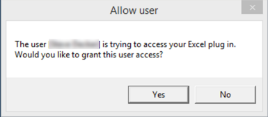
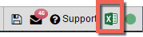

To connect TT to your Excel spreadsheet:
Log in to TT, and open a TT workspace.
Start Excel if it is not already running.
From the File menu, open the Excel linking sub-menu and select Connect to Excel.
The first time you connect to Excel, TT displays the following security dialog:

Note: The dialog might be obscured by the Excel window, so you might need to collapse or move the Excel window to see the dialog.
Click Yes.
After successfully connecting to Excel, a new Excel icon is added to the menu bar, as shown.

Tip: After the initial connection, you can enable and disable the connection to Excel by clicking the Excel icon in the menu bar.